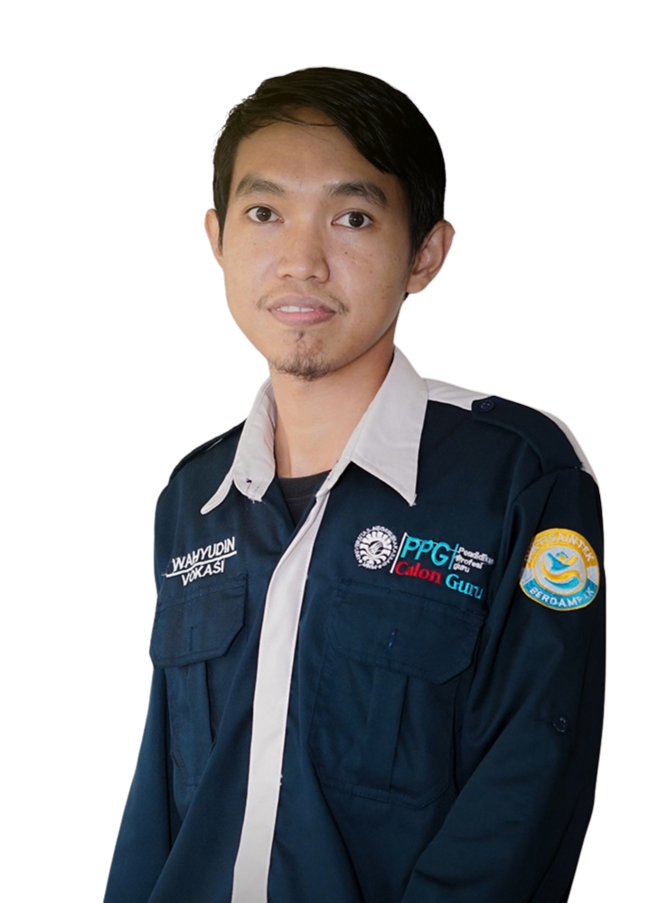
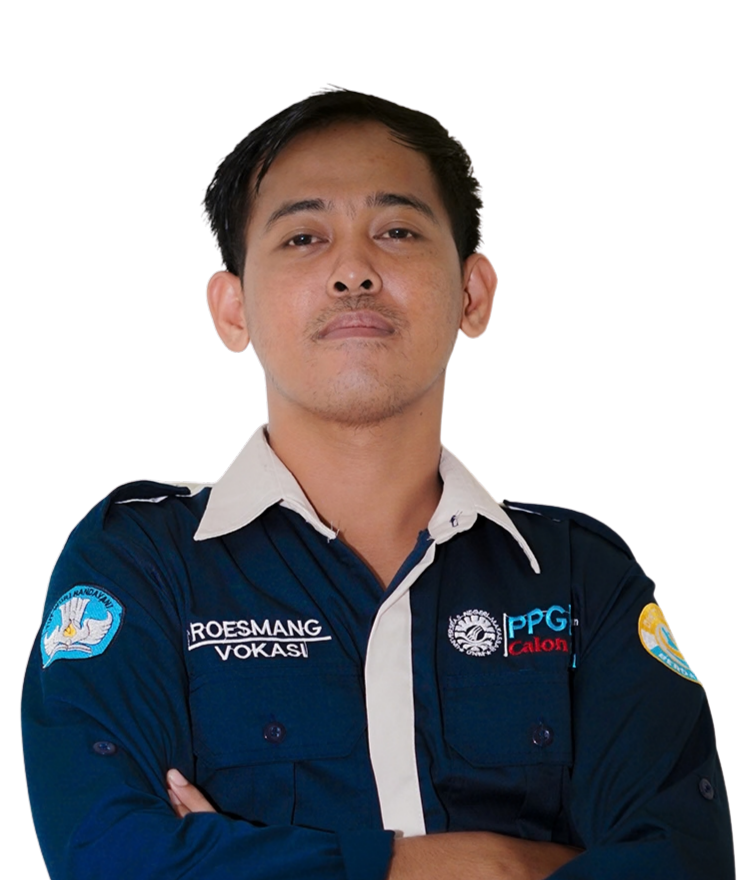
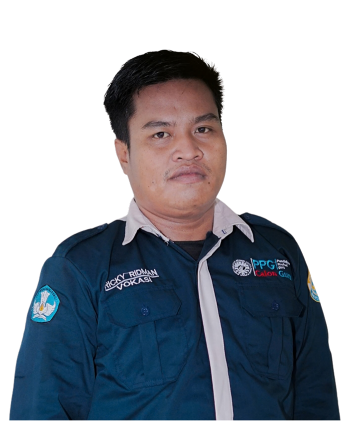
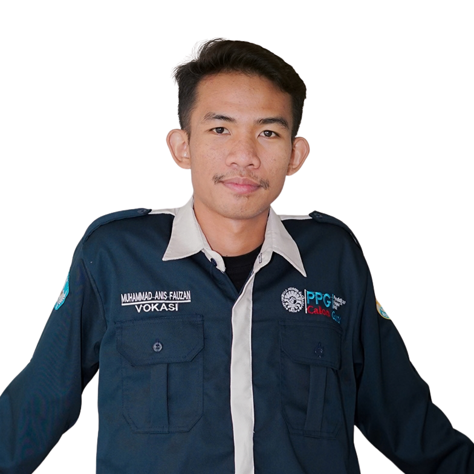
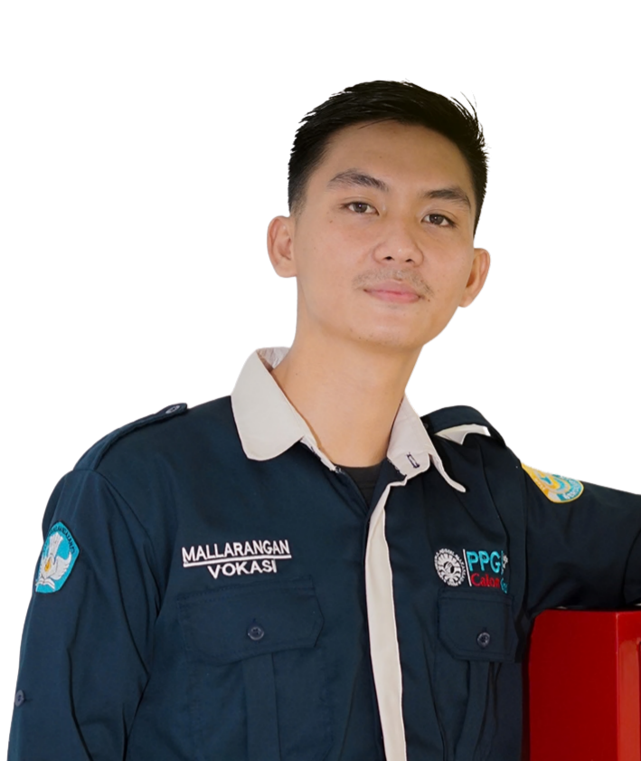
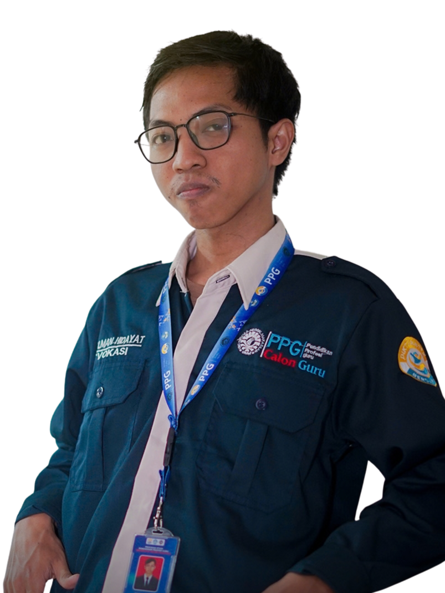
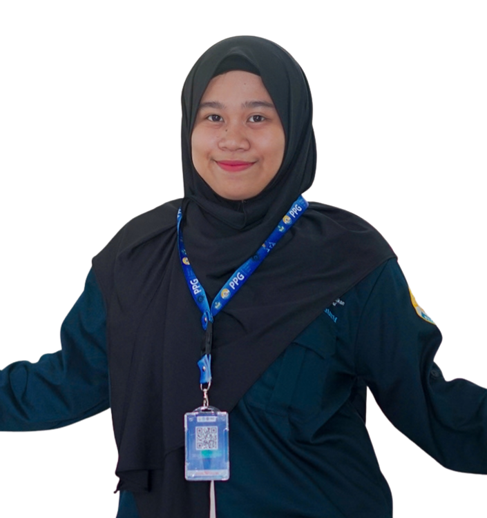
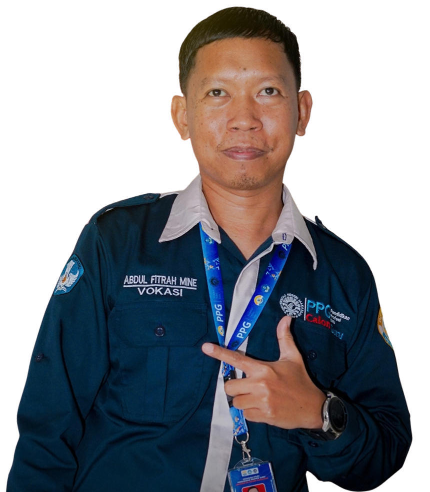
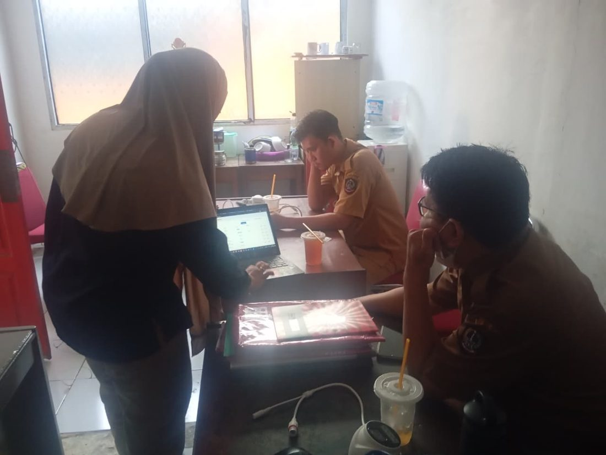
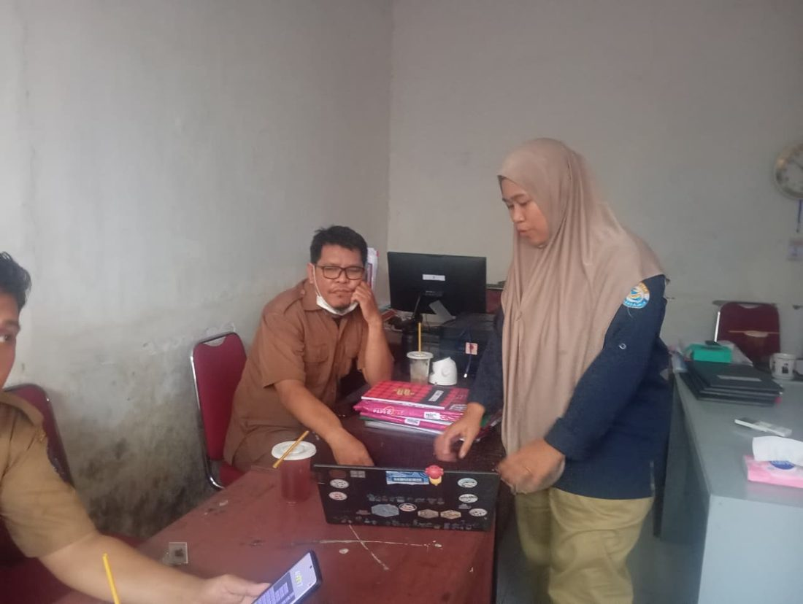

KETUA

Ketua
01
Ketua Projek
Wahyudin
Memimpin jalannya proyek, membagi tugas, memantau jadwal, dan menjadi penghubung tim dengan dosen pendamping serta pihak sekolah.
Trainer sistem starter berbasis IoT dan absensi guru dengan pengenalan wajah (face recognition) yang terhubung ke WhatsApp kurikulum.
Satu dosen pendamping dan delapan anggota dari tiga bidang keahlian di balik proyek ini.

Memberikan arahan metodologis, mengevaluasi ketercapaian target, dan membimbing penyusunan refleksi kepemimpinan tim.

Memimpin jalannya proyek, membagi tugas, memantau jadwal, dan menjadi penghubung tim dengan dosen pendamping serta pihak sekolah.

Memastikan rangkaian dan cara kerja sistem starter pada trainer sesuai standar otomotif, dari kunci kontak, relay, dan solenoid sampai motor starter.

Merancang dan membangun rangka serta panel trainer agar kokoh, rapi, aman dipindahkan, dan mudah dipakai praktik.

Menyusun modul, lembar kerja, dan materi pendukung supaya trainer bisa langsung dipakai dalam pembelajaran di kelas.

Menyusun dan menjalankan uji fungsi trainer serta aplikasi absensi, mencatat hasilnya, dan memastikan produk siap didemonstrasikan.

Merakit dan mengintegrasikan ESP32, sensor, dan relay kontrol agar trainer bisa dipantau dan dikendalikan lewat smartphone.

Memprogram mikrokontroler dan aplikasi absensi pengenalan wajah, mengelola database kehadiran, serta menghubungkan notifikasi ke WhatsApp kurikulum.

Menangani wiring diagram, sekring, dan kestabilan daya, serta memastikan keselamatan kerja selama perakitan dan pengujian.
Sistem starter adalah materi inti di jurusan Otomotif, tetapi pembelajarannya masih banyak mengandalkan teori dan gambar. Siswa sulit melihat langsung bagaimana arus mengalir dari baterai, kunci kontak, relay, dan solenoid sampai ke motor starter. Di sisi lain, siswa SMK sekarang juga perlu mengenal IoT untuk monitoring dan kontrol jarak jauh.
Masalah ini tidak bisa diselesaikan satu bidang saja. Otomotif memahami sistem starter, Kelistrikan menangani rangkaian, dan TJKT menguasai jaringan, IoT, serta database. Karena itu kami memilih tema kepemimpinan kolaboratif lintas disiplin.
Tujuan umum: meningkatkan kemampuan pembelajaran sistem starter melalui trainer berbantuan IoT, sekaligus mempermudah pemantauan kehadiran guru lewat absensi pengenalan wajah yang terhubung ke WhatsApp kurikulum.
Tujuan khusus
Siswa mendapat media praktik yang nyata, guru otomotif punya alat bantu mengajar, dan bagian kurikulum langsung tahu kehadiran guru tanpa rekap manual.
Kami berlatih membagi tugas, berkomunikasi lintas bidang, mengambil keputusan bersama, dan menyelesaikan masalah teknis dengan tenggat waktu.
Sekolah memiliki trainer yang bisa dipakai berulang dan sistem absensi digital yang mendukung administrasi serta kedisiplinan.
Baca modulnya, lalu coba langsung aplikasinya.
Panduan belajar untuk siswa dan guru: dari cara kerja sistem starter, merangkai trainer, sampai mengontrol dan memantau starter lewat smartphone.
SIGAP (Sistem Informasi Guru Absen Pintar): guru cukup menghadap kamera, AI mengenali wajahnya, lalu jam masuk atau pulang tercatat otomatis dan dikirim ke WhatsApp kurikulum.
Demo trainer sistem starter dan tutorial lengkap aplikasi SIGAP. Nyaman ditonton dari HP.
Pengoperasian trainer lewat kunci kontak dan HP.
Alur lengkap dari masuk, absensi, sampai laporan dan izin.
Dari perencanaan sampai implementasi di sekolah.

